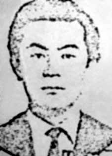

Ichiro
Nagami
CIRCUNSTÂNCIAS DA MORTE
Ichiro Nagami morreu em 4 de setembro de 1969 quando artefatos explosivos que ele e seu companheiro de militância, Sérgio Roberto Corrêa, transportavam no interior de um veículo explodiram.
Por volta das 5h do referido dia, um Fusca azul explodiu na rua ainda deserta, danificando o prédio de quatro andares localizado a poucos metros de distância. A explosão, na Rua da Consolação, em São Paulo, levou à morte imediata do militante Sérgio Roberto Corrêa.
Matérias jornalísticas da época noticiaram que o corpo de Ichiro ficou jogado na calçada por algum tempo, até que os policiais o levassem ao Hospital das Clínicas, onde veio a óbito. Corroborando a versão de que Ichiro não faleceu na rua, o laudo de necropsia revela que seu corpo deu entrada no Instituto Médico-Legal somente às 9h. A causa da morte é descrita como “choque traumático”.
Não consta nenhum registro formal sobre sua entrada no hospital, como era frequente nas remoções realizadas pelos órgãos de repressão. Conforme informações do jornalista Percival de Souza, autor do livro Autópsia do Medo, concedidas a Belisário dos Santos Júnior, relator da CEMDP, o local do acidente foi vasculhado por agentes do DOI e o Delegado Hélio Tavares impediu o acesso da imprensa.
Antes de morrer, Ichiro teria sido obrigado a revelar o endereço onde morava. Nos arquivos do Departamento de Ordem Política e Social (DOPS/SP) foram encontrados recortes de revistas indicando que o carro em que os militantes se encontravam foi perseguido por um Chevrolet Bel-Air que, após a explosão, desviou dos destroços e fugiu.
Atendendo ao pedido do Delegado Titular do DOPS, Wanderico de Arruda Moraes, o corpo de Ichiro foi liberado à família e enterrado no dia 6 de setembro, no Cemitério de Picanço, em Guarulhos, São Paulo.
Ichiro Nagami died on September 4, 1969 when explosive devices that he and his fellow activist, Sérgio Roberto Corrêa, were carrying inside a vehicle exploded.
At around 5am on that day, a blue Beetle exploded in the still deserted street, damaging the four-story building located a few meters away. The explosion, on Rua da Consolação, in São Paulo, led to the immediate death of militant Sérgio Roberto Corrêa.
News articles at the time reported that Ichiro's body was left lying on the sidewalk for some time, until the police took him to Hospital das Clínicas, where he died. Corroborating the version that Ichiro did not die on the street, the autopsy report reveals that his body was only admitted to the Legal Medical Institute at 9 am. The cause of death is described as “traumatic shock”.
There is no formal record of his entry into the hospital, as was common in removals carried out by law enforcement agencies. According to information from journalist Percival de Souza, author of the book Autópsia do Medo, given to Belisário dos Santos Júnior, CEMDP rapporteur, the accident site was searched by DOI agents and Delegate Hélio Tavares prevented press access.
Before he died, Ichiro would have been forced to reveal the address where he lived. In the archives of the Department of Political and Social Order (DOPS/SP), magazine clippings were found indicating that the car in which the militants were traveling was chased by a Chevrolet Bel-Air which, after the explosion, avoided the wreckage and fled.
In response to the request of the DOPS Chief Delegate, Wanderico de Arruda Moraes, Ichiro's body was released to his family and buried on September 6, at the Picanço Cemetery, in Guarulhos, São Paulo.
Ichiro Nagami murió el 4 de septiembre de 1969 cuando explotaron artefactos explosivos que él y su compañero activista, Sérgio Roberto Corrêa, llevaban dentro de un vehículo.
Alrededor de las cinco de la mañana de ese día, un Escarabajo azul explotó en la calle aún desierta, dañando el edificio de cuatro pisos ubicado a pocos metros de distancia. La explosión, en la Rua da Consolação, en São Paulo, provocó la muerte inmediata del militante Sérgio Roberto Corrêa.
Los artículos periodísticos de la época informaron que el cuerpo de Ichiro permaneció tirado en la acera durante algún tiempo, hasta que la policía lo llevó al Hospital das Clínicas, donde murió. Corroborando la versión de que Ichiro no murió en la calle, el informe de la autopsia revela que su cuerpo recién ingresó al Instituto Médico Legal a las 9 de la mañana. La causa de la muerte se describe como “shock traumático”.
No existe constancia formal de su ingreso al hospital, como era habitual en los traslados realizados por las fuerzas del orden. Según información del periodista Percival de Souza, autor del libro Autópsia do Medo, entregada a Belisário dos Santos Júnior, relator del CEMDP, el lugar del accidente fue registrado por agentes del DOI y el delegado Hélio Tavares impidió el acceso de la prensa.
Antes de morir, Ichiro se habría visto obligado a revelar la dirección donde vivía. En los archivos del Departamento de Orden Político y Social (DOPS/SP) se encontraron recortes de revistas que indican que el automóvil en el que viajaban los militantes fue perseguido por un Chevrolet Bel-Air que, tras la explosión, evitó los escombros y se dio a la fuga.
En respuesta a la solicitud del jefe delegado del DOPS, Wanderico de Arruda Moraes, el cuerpo de Ichiro fue entregado a su familia y enterrado el 6 de septiembre, en el cementerio de Picanço, en Guarulhos, São Paulo.